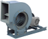
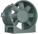
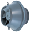
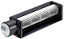

2021年
問題73 送風機に関する次の記述のうち，最も不適当なものはどれか．
（1）軸流送風機は，空気が羽根車の中を軸方向から入り，軸方向へ抜ける．
（2）シロッコファンは，遠心式に分類される．
（3）ダンパの開度を変えると，送風系の抵抗曲線は変化する．
（4）送風系の抵抗を大きくして風量を減少させると，空気の脈動により振動，騒音が発生し，不安定な運転状態となることがある．
（5）グラフの横軸に送風機の風量，縦軸に送風機静圧を表した送風機特性曲線は，原点を通る二次曲線となる．
2021年
問題73 正解（5） 頻出度AAA
原点を通る二次曲線となるのは送風系の抵抗曲線である．
送風機の運転について，横軸に風量，縦軸に静圧とり，合わせて軸動力，効率，騒音等を示したグラフを特性曲線図又は性能曲線図という．
特性曲線図はメーカーのカタログなどで手に入るので，送風機が設置されるダクト系の抵抗曲線(風量－圧力損失曲線)を書き入れると，送風機の運転点が分かるので送風機の選定に利用する（2021-73-1図参照）．
2021-73-1図 特性曲線と抵抗曲線
ダクトの抵抗による圧力損失はダクトの長さ，径の大きさや曲がりの有無などによって変化するが，いずれも風速(風量)の2乗に比例するので，抵抗曲線は，原点を通る2次曲線となる．
その送風量が設計風量よりも大きいことが判明した場合には，送風系のダンパを操作してR→R’とすることで，簡便に設計風量と同一となるように調整することができる（2021-73-2図参照）．
2021-73-2図 ダンパによる風量調整
-(1) ，-(2) 送風機の種類を大別すると遠心送風機，軸流送風機，斜流送風機，横流送風機に分けることができる（2021-73-3図～2021-73-6図参照）
2021-73-3図 遠心式送風機（シロッコファンの例）

出典 テラル株式会社
https://www.teral.net/products/search/type?kishu=25300
2021-73-4図 軸流式送風機の例

出典 ミツヤ送風機株式会社
https://www.mitsuyaj.co.jp/products/axial_flow/axial_flow_ap.html
2021-73-5図 斜流式送風機の例

出典 テラル株式会社
https://www.teral.net/products/search/type?kishu=550630
2021-73-6図 横流式送風機の例

出典 オリエンタルモーター株式会社
https://www.orientalmotor.co.jp/ja/products/fan-motors/mfd
羽根車と気流の様子は2021-73-7図参照．
2021-73-7図 羽根車と気流の様子
出典 三菱電機
https://www.mitsubishielectric.co.jp/ldg/ja/air/guide/support/knowledge/detail_03.html を基に作成
-(4) この空気の脈動により振動，騒音が発生する現象をサージングという．
サージング（Surging：脈動）はポンプや送風機の流体機械などの共通の現象で，特性曲線にサージング領域（右上がり特性域．風量，静圧がともに増加する領域．2021-73-8図参照）を持つ機械は，この領域で運転すると，流体の流量と圧力の周期的な変動が生じ，運転が不安定になり，ダクトや配管に振動・騒音が発生することがある．この現象をサージングと呼ぶ．サージングを避けるためには，ダンパ，バルブを開けて，サージング領域より大流量側の右下がり部分で運転する必要がある．
2021-73-8図 サージング領域